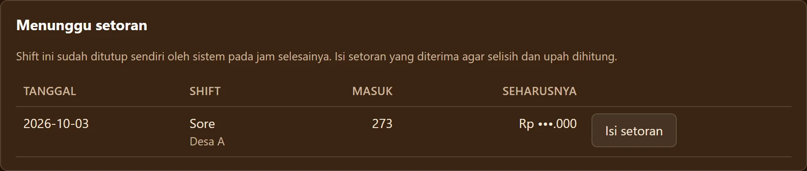
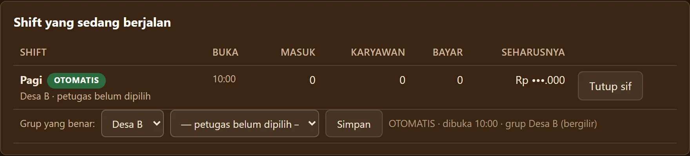
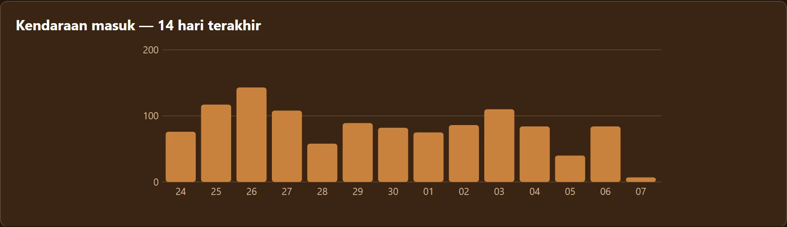

Kami tidak menjanjikan angka. Kami menjamin setiap rupiah tercatat.
Sistem kami telah teruji dan aktif digunakan di berbagai sektor usaha (kuliner, operasional shift kafe, rental kendaraan, hingga ritel) — baik implementasi berbayar maupun kemitraan yang terus berjalan stabil hingga saat ini.
Lihat buktinyaUang dan barang berpindah tangan setiap jam, tetapi ke mana selisihnya pergi baru disadari saat kas dihitung malam hari.
Di lapangan, uang berpindah tangan langsung dari pelanggan ke petugas tanpa jejak kertas atau angka yang tercatat. Saat rekap dihitung di penghujung hari, pemilik usaha hanya menerima apa yang diserahkan.
Masalahnya bukan staf berniat curang, melainkan ketiadaan catatan seketika yang membuat selisih tidak pernah bisa dilacak sumbernya.
Sistem baru tidak boleh menghentikan transaksi yang sedang berjalan walau hanya satu jam.
Kami tidak meminta usaha Anda tutup untuk pemasangan yang rumit. Pelanggan tetap dilayani seperti biasa, sementara pencatatan masuk ke sistem secara bertahap tanpa mengganggu ritme usaha.
Aplikasi kami hadir bukan untuk menggantikan orang lapangan, melainkan menjaga mereka agar tidak lagi disalahkan saat kas berselisih.
Petugas kasir, staf gudang, dan pekerja lapangan adalah penggerak utama usaha. Tampilannya dibuat sederhana agar mudah dipakai dari ponsel. Setiap penerimaan tercatat atas nama mereka, sehingga mereka pulang dengan tenang dan terlindungi dari kecurigaan saat setoran diperiksa.
Sistem yang baik tidak dinilai dari tenangnya hari biasa, melainkan bagaimana ia bertahan saat usaha sedang kacau.
Tiga kejadian nyata di aplikasi parkir Pantala, dan apa yang kami lakukan:
- Petugas tidak sempat membuka komputer. Shift ditutup sendiri oleh sistem pada jam selesainya dan ditandai “menunggu setoran”, lalu shift berikutnya dibuka sendiri. Tidak ada angka yang ditebak.
- Langganan sudah dibayar, peringatan masih tampil. Status tagihan kini otomatis disamakan dengan catatan pembayaran agar peringatan keliru tidak muncul lagi.
- Grafik harian tidak muncul tiap hari. Kini dipetakan per tanggal kalender, sehingga hari sepi pun tetap tampak.



Coba Sendiri Bagaimana Komputer Kafe Menutup & Membuka Shift Mandiri
Klik tombol simulasi di bawah untuk menguji bagaimana sistem Pantala menangani pergantian shift secara mandiri tanpa operator utak-atik angka:
Ingin sistem anti-selisih ini beroperasi di komputer kafe Anda?
Konsultasikan Pemasangan via WhatsApp →Kami membuka seluruh ketentuan sejak awal, karena rasa percaya dibangun dari kejelasan hak dan kewajiban.
Untuk aplikasi kustom: ruang lingkup kebutuhan, estimasi pengerjaan, dan skema biaya disepakati bersama secara lugas sebelum pekerjaan teknis dimulai.
Tanpa biaya siluman: tidak ada biaya di luar yang telah Anda setujui.
- Pemasangan sistem langsung di komputer kafe/pos jaga Anda
- Otomasi buka-tutup shift otomatis sesuai jadwal jam operasional
- Sistem antarmuka pencatatan kendaraan/karcis anti-kebocoran
- Laporan rekapitulasi setoran & kartu Menunggu Setoran
- Pelatihan staf jaga sampai mandiri
- Biaya pemeliharaan sistem: Rp 300.000 / bulan (mulai bulan berikutnya)
Yang kami jamin bukan omzet Anda pasti melipat ganda, melainkan bahwa setiap rupiah dan transaksi usaha Anda tercatat dengan benar.
Ya kami segera memproses permintaan Anda setelah masuk pembayaran uang muka, dan pelunasan setelah aplikasi jadi. Sedangkan biaya langganan akan kami kenakan mulai bulan berikutnya.
Ceritakan alur usaha Anda.
Diskusikan kebutuhan Anda langsung dengan tim AutoClaryTech, tanpa paksaan.